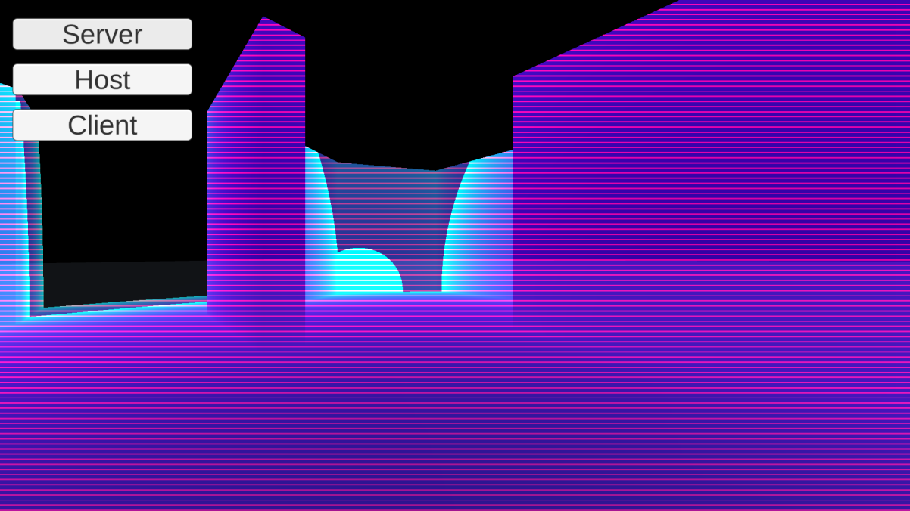

PROJECTS
Echo Hunt
| Development Period | June 2023 |
|---|---|
| Project Links |
|
| Relevant Skills |
|
| Collaborators |
|
| Awards | UTS Tech Festival 2023 - 48hr Game Jam: Most Innovative Voice-comms Mechanic |
Echo Hunt was created for the 2023 UTS Tech Festival 48hr Game Jam. It is a multiplayer cooperative game for 2 players where both players work together in order to trap and capture a strange entity (a default 3D object cube) within a time limit.
The 2 players are put in a dark maze and need to navigate through it by using proximity chat, which reveals an area around the player based on microphone input. The cube that the players are trying to capture will flee from any source of noise, which means that players will need to work together and formulate a plan to corner the cube.
For this project I assumed the role of project manager and lead designer. The novel design of the main mechanic helped the game win the award for Most Innovative Voice-comms Mechanic.
I was also responsible for the implementation of multiplayer, which is something I had never touched prior to the game jam. It was incredibly challenging to set up, given my complete inexperience with Unity multiplayer and also the short time limit. In the end, I was able to set up multiplayer where multiple instances of the game could be run on a single device and connect to each other.
The final product is largely unpolished, given that our team was comprised of only programmers and no 3D artists, and that we had difficulties implementing multiplayer and proximity chat in the strict timeframe. If I had been given more time, I definitely would have tried to add proper multiplayer across multiple devices using peer-to-peer networking.
Despite the challenges we faced, we ended up creating an interesting mechanic and we at least have now taken the first step in learning how to make multiplayer games in Unity.
